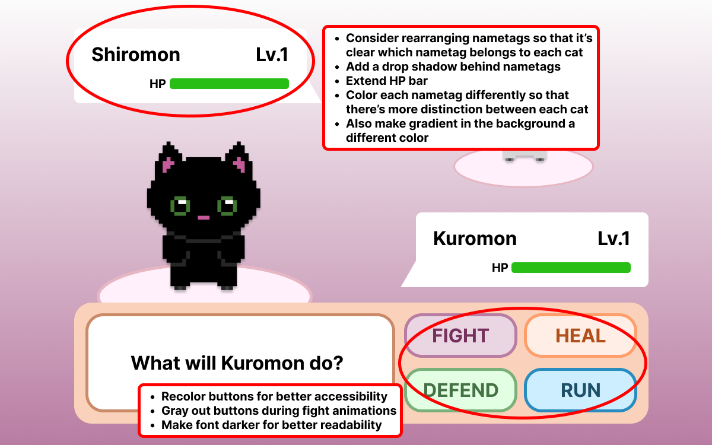

Final Project Report
1. Who critiqued your work and what qualifications do they possess that make their opinions on design valid?
Samantha Mah critiqued my work and is an undergraduate design tutor for the class.
Ashley Preciado also critiqued my work. She graduated from UC Davis with a Design degree and was a Lead Editor for Aggie Studios where she worked on video editing, creating storylines, and designing video graphics.
2. Design critique notes: what is strong and what can be improved in terms of visual design for the project.
Strong
- How clean and sleek the layout is
- Theme is clear
- Use of color fits the theme with cute cats
- The simple typeface is good
Improvements
- A lot of blank space compared to Pokemon
- Spacing with the character nametag
- Issues with color blindness and accessiblity
- Show how health points could correlate with levels
- The font is ok, color is not accessible
- Making the text size smaller for buttons
- Add a drop shadow for name tag
- Rearrange name tags
- Extend HP bar
- Highlight buttons less after seeing Pokemon battle
- Make name tags more aggressive
- Make Pokemon closer in proximity to nametags
- Maybe color in the circle and name tag
3. Include at least one image from your project, marked up with improvements to be made
